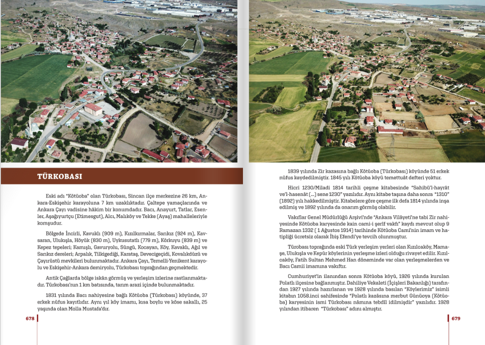
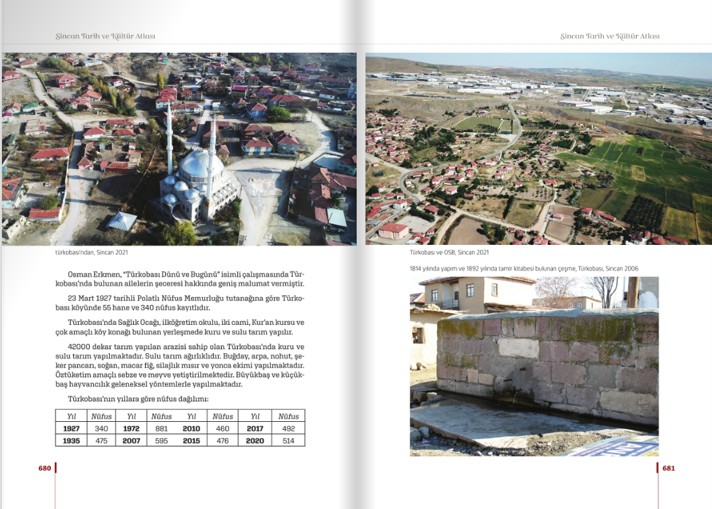
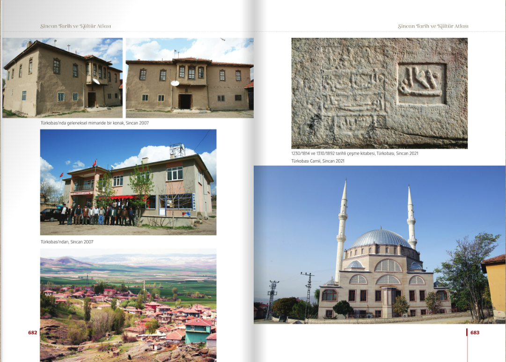

Köyümüzün Tarihi
Türkobası Köyü'nün tarihini ve kültürel mirasını aşağıdaki kaynaktan detaylı şekilde inceleyebilirsiniz.



Türkobası Köyü'nün tarihini ve kültürel mirasını aşağıdaki kaynaktan detaylı şekilde inceleyebilirsiniz.